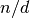

decifrac – Decimal/Fraction Converter¶
Analysis¶
Converting feet, inches and fractions to decimal feet is simply this.
Given feet,  , inch,
, inch,  , numerator,
, numerator,  , denominator,
, denominator,  , we can compute decimal feet,
, we can compute decimal feet,  .
.

Converting the other way involves approximating the decimal fraction.
HamCalc uses 128ths; so we can develop an integer which is in 128ths of an inch, via . We can then work out a foot, inch and fraction for this value.
The  fraction may get reduced to some smaller power of 2.
We can also do the entire thing in inches instead of feet.

This doesn’t change much, really.
Implementation¶
These are unit conversions.
hamcalc.math.decifrac – Decimals to fractions
Some Test Cases
>>> import hamcalc.math.decifrac as decifrac
>>> x=decifrac.FEET_INCH_FRAC_TUPLE.to_std( (13, 3, 5, 8) )
>>> decifrac.INCHES.from_std( x )
159.625
>>> decifrac.FEET.from_std( x )
13.302083333333332
>>> decifrac.METRES.from_std( x )
4.054475
>>> decifrac.FEET_INCH_FRAC_TUPLE.from_std( x )
(13, 3, 5, 8)
>>> decifrac.FEET_INCH_FRAC.from_std(x)
'13\'- 3 5/8"'
- class hamcalc.math.decifrac.FEET_INCH_FRAC¶
Feet-Inch-Fraction – as String
Legacy¶
This program isn’t really what it appears to be.
This is not simple decimals to fractions and fractions to decimals.
This is really about converting linear measurements in feet, inches and fractions to feet. And about converting decimal measuremnts of length (inches, feet, mm, cm, meter) to feet, inches and fractions.
Sample Output¶
ENTER: number of whole feet................................? 13
13'-
ENTER: number of whole inches..............................? 3
13'- 3
ENTER: fraction enumerator (top number of fraction)........? 5
13'- 3 5/
ENTER: fraction denominator (bottom number of fraction)....? 8
13'- 3 5/8"
= 13.302 feet
= 159.625 inches
= 4.054 metres